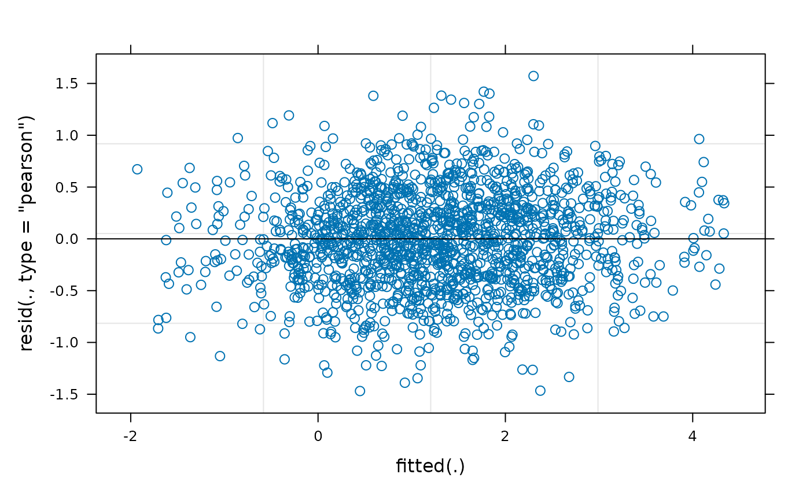
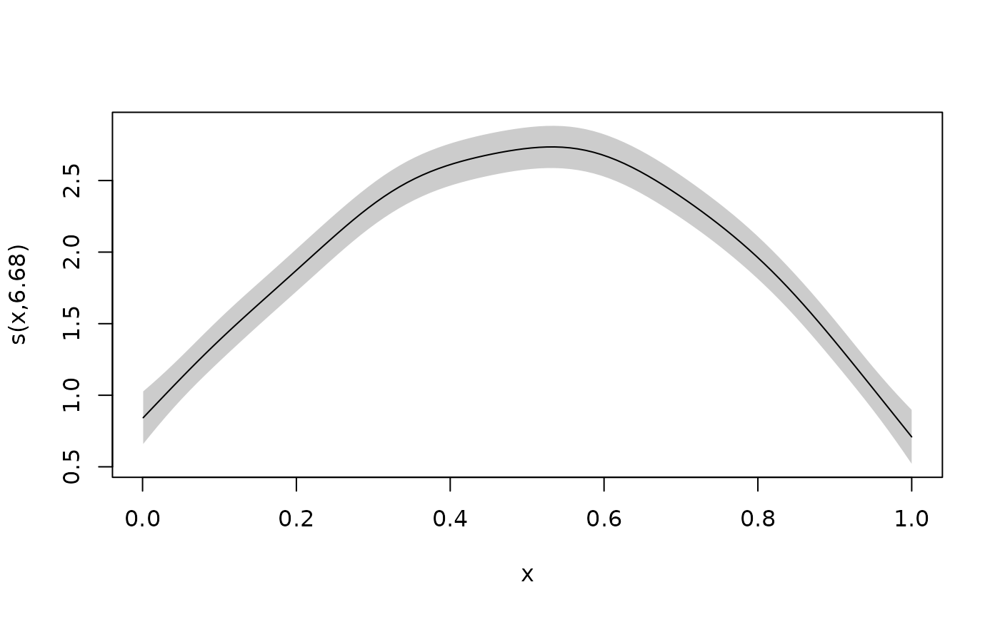

This vignette describes how to use galamm to estimate
latent variable models with smooth terms, or equivalently, generalized
additive mixed models with factor structures. The examples are based on
Section 4 and 5 in Sørensen, Fjell, and Walhovd
(2023), but as we cannot share the data,
we have instead simulated somewhat simpler datasets that will be used.
We will gradually add complexity, starting with a simple generalized
additive mixed. Please refer to the introductory
vignette for an overview of the statistical models.
Generalized Additive Mixed Models
We start by showing how galamm can be used to estimated
generalized additive mixed models.
Gaussian Responses
The cognition dataset contains simulated data with
measurements of abilities in three cognitive domains.
head(cognition)
#> id domain x timepoint item trials y
#> 1 1 1 0.1457912 1 1 1 0.49132612
#> 2 1 1 0.1457912 1 2 1 0.67917855
#> 3 1 1 0.1457912 1 3 1 -0.01864935
#> 4 1 1 0.1953280 2 1 1 0.86089677
#> 5 1 1 0.1953280 2 2 1 1.48573231
#> 6 1 1 0.1953280 2 3 1 0.46781198For this first example, we focus only on the first item measured for the first domain.
dat <- subset(cognition, domain == 1 & item == 1)Each subject in this dataset has been measured eight times, and we can plot the measurements as follows:
ggplot(dat, aes(x = x, y = y, group = id)) +
geom_point(size = .1) +
geom_line(alpha = .3)
We use a generalized additive mixed model with random intercepts per subject to estimate the function relating \(x\) to \(y\). In terms of the model framework outlined in the introductory vignette, we model the \(i\)th response from the \(j\)th subject with
\[ y_{ij} = f(x_{ij}) + \eta_{j} + \epsilon_{ij} \]
where \(f(x_{ij})\) is a smooth function to be estimated, \(\eta_{j} \sim N(0, \psi)\) is a random intercept, and \(\epsilon_{ij} \sim N(0, \phi)\) is a residual term.
This model can be estimated using gamm4 as follows:
The package gamm4 uses lme4 to fit the
underlying model, and the resulting model has two components.
mod_gamm4$mer contains the mixed model representation,
whereas in mod_gamm4$gam the fixed and random effects
corresponding to spline coefficients have been converted into single
smooth terms. We can look at the model summary for each:
summary(mod_gamm4$mer)
#> Linear mixed model fit by maximum likelihood ['lmerMod']
#>
#> AIC BIC logLik deviance df.resid
#> 3166.0 3192.9 -1578.0 3156.0 1595
#>
#> Scaled residuals:
#> Min 1Q Median 3Q Max
#> -2.9092 -0.5972 -0.0113 0.6094 3.3454
#>
#> Random effects:
#> Groups Name Variance Std.Dev.
#> id (Intercept) 0.8744 0.9351
#> Xr s(x) 2.1441 1.4643
#> Residual 0.2756 0.5250
#> Number of obs: 1600, groups: id, 200; Xr, 8
#>
#> Fixed effects:
#> Estimate Std. Error t value
#> X(Intercept) 1.25075 0.06741 18.55
#> Xs(x)Fx1 0.03334 0.20783 0.16
#>
#> Correlation of Fixed Effects:
#> X(Int)
#> Xs(x)Fx1 0.000
summary(mod_gamm4$gam)
#>
#> Family: gaussian
#> Link function: identity
#>
#> Formula:
#> y ~ s(x)
#>
#> Parametric coefficients:
#> Estimate Std. Error t value Pr(>|t|)
#> (Intercept) 1.25075 0.06741 18.55 <2e-16 ***
#> ---
#> Signif. codes: 0 '***' 0.001 '**' 0.01 '*' 0.05 '.' 0.1 ' ' 1
#>
#> Approximate significance of smooth terms:
#> edf Ref.df F p-value
#> s(x) 6.644 6.644 306.9 <2e-16 ***
#> ---
#> Signif. codes: 0 '***' 0.001 '**' 0.01 '*' 0.05 '.' 0.1 ' ' 1
#>
#> R-sq.(adj) = 0.256
#> lmer.REML = 3156 Scale est. = 0.27565 n = 1600We can also plot the estimated smooth term:
plot(mod_gamm4$gam)In contrast, invoking the plot function on the mixed
model part gives us a diagnostic plot.
plot(mod_gamm4$mer)
With galamm we use similar argument, but the
random specification is now part of the model formula.
As opposed to gamm4, galamm gives a single
summary. As can be seen, smooth terms are both reported as random
effects, and in a separate line under the header “Approximate
significance of smooth terms:”. Reassuringly, the results from fitting
the model with gamm4 and with galamm are
essentially equally, even though they use somewhat different
computational algorithms.
summary(mod)
#> Generalized additive latent and mixed model fit by maximum marginal likelihood.
#> Formula: y ~ s(x) + (1 | id)
#> Data: dat
#>
#> AIC BIC logLik deviance df.resid
#> 3166.0 3192.9 -1578.0 3156.0 1595
#>
#> Scaled residuals:
#> Min 1Q Median 3Q Max
#> -2.9092 -0.5972 -0.0113 0.6094 3.3454
#>
#> Random effects:
#> Groups Name Variance Std.Dev.
#> id (Intercept) 0.8744 0.9351
#> Xr s(x) 2.1440 1.4642
#> Residual 0.2757 0.5250
#> Number of obs: 1600, groups: id, 200; Xr, 8
#>
#> Fixed effects:
#> Estimate Std. Error t value Pr(>|t|)
#> (Intercept) 1.25074 0.06741 18.5543 7.527e-77
#> s(x)Fx1 0.03339 0.20805 0.1605 8.725e-01
#>
#> Approximate significance of smooth terms:
#> edf Ref.df F p-value
#> s(x) 6.644 6.644 306.9 <2e-16The plot function now gives us a diagnostic plot, which
by inspection can be seen to be almost identical to the plot produced
from the mixed model part of the gamm4 model.
plot(mod)In order to plot the smooth term, we use
plot_smooth.
plot_smooth(mod)
The plot_smooth function is a thin wrapper around the
plot.gam function provided by the mgcv package
(Wood
2017). This means that the arguments used by
plot.gam can be used also here, as see with the examples
below:
plot_smooth(mod,
shade = TRUE, rug = FALSE, seWithMean = TRUE,
shift = +2
)
plot_smooth(mod, se = FALSE)Binomial Responses
In the cognition dataset, the responses relating to domain 2 and 3 are binomially distributed. We will use the first trial of the third domain to illustrate how such data can be modeled.
dat <- subset(cognition, domain == 3 & item == 1)Each observation counts the number of successes in ten trials.
plot(dat$x, dat$y, xlab = "x", ylab = "Correct responses")
Again we can fit this model using gamm4.
mod_gamm4 <- gamm4(cbind(y, trials - y) ~ s(x),
random = ~ (1 | id),
data = dat, family = binomial
)We can look at the summary output as before.
summary(mod_gamm4$mer)
#> Generalized linear mixed model fit by maximum likelihood (Laplace
#> Approximation) [glmerMod]
#> Family: binomial ( logit )
#>
#> AIC BIC logLik deviance df.resid
#> 3464.2 3485.7 -1728.1 3456.2 1596
#>
#> Scaled residuals:
#> Min 1Q Median 3Q Max
#> -5.0238 -0.1789 0.0750 0.4958 3.7142
#>
#> Random effects:
#> Groups Name Variance Std.Dev.
#> id (Intercept) 1.142 1.068
#> Xr s(x) 1008.046 31.750
#> Number of obs: 1600, groups: id, 200; Xr, 8
#>
#> Fixed effects:
#> Estimate Std. Error z value Pr(>|z|)
#> X(Intercept) 3.8851 0.2265 17.15 < 2e-16 ***
#> Xs(x)Fx1 4.5510 0.7328 6.21 5.28e-10 ***
#> ---
#> Signif. codes: 0 '***' 0.001 '**' 0.01 '*' 0.05 '.' 0.1 ' ' 1
#>
#> Correlation of Fixed Effects:
#> X(Int)
#> Xs(x)Fx1 -0.456
summary(mod_gamm4$gam)
#>
#> Family: binomial
#> Link function: logit
#>
#> Formula:
#> cbind(y, trials - y) ~ s(x)
#>
#> Parametric coefficients:
#> Estimate Std. Error z value Pr(>|z|)
#> (Intercept) 3.8851 0.2023 19.2 <2e-16 ***
#> ---
#> Signif. codes: 0 '***' 0.001 '**' 0.01 '*' 0.05 '.' 0.1 ' ' 1
#>
#> Approximate significance of smooth terms:
#> edf Ref.df Chi.sq p-value
#> s(x) 8.665 8.665 1684 <2e-16 ***
#> ---
#> Signif. codes: 0 '***' 0.001 '**' 0.01 '*' 0.05 '.' 0.1 ' ' 1
#>
#> R-sq.(adj) = 0.542
#> glmer.ML = 1144.4 Scale est. = 1 n = 1600And we can plot the smooth term. The diagnostic plot is not very useful in the binomial case, so we omit it.
plot(mod_gamm4$gam)Again the galamm syntax is similar, but it puts the
random effect specification into the model formula.
The estimates are very similar, although not identical. The
difference in deviance is due to differences in the way deviance is
defined. The call deviance(mod_gamm4$mer) gives the same
value as in the summary for the model fitted with galamm.
summary(mod)
#> Generalized additive latent and mixed model fit by maximum marginal likelihood.
#> Formula: cbind(y, trials - y) ~ s(x) + (1 | id)
#> Data: dat
#>
#> AIC BIC logLik deviance df.resid
#> 3464.2 3485.7 -1728.1 1144.4 1596
#>
#> Scaled residuals:
#> Min 1Q Median 3Q Max
#> -0.8 17.6 39.4 157.7 5409.6
#>
#> Random effects:
#> Groups Name Variance Std.Dev.
#> id (Intercept) 1.142 1.069
#> Xr s(x) 1003.317 31.675
#> Number of obs: 1600, groups: id, 200; Xr, 8
#>
#> Fixed effects:
#> Estimate Std. Error z value Pr(>|z|)
#> (Intercept) 3.883 0.2300 16.881 6.174e-64
#> s(x)Fx1 4.559 0.7481 6.094 1.102e-09
#>
#> Approximate significance of smooth terms:
#> edf Ref.df Chi.sq p-value
#> s(x) 8.664 8.664 1685 <2e-16
plot_smooth(mod)Generalized Additive Models with Factor Structures
We now add factor structures to the GAMMs. These are the types of
models that neither gamm4 nor mgcv are able to
estimate (at least without lots of manual hacking), and where
galamm provides new functionality.
Conditionally Gaussian Responses
To illustrate basic usage, we continue with the cognition data, but now use all items of cognitive domain 1. These are all conditionally normal distributed.
dat <- subset(cognition, domain == 1)
dat$item <- factor(dat$item)
head(dat)
#> id domain x timepoint item trials y
#> 1 1 1 0.1457912 1 1 1 0.49132612
#> 2 1 1 0.1457912 1 2 1 0.67917855
#> 3 1 1 0.1457912 1 3 1 -0.01864935
#> 4 1 1 0.1953280 2 1 1 0.86089677
#> 5 1 1 0.1953280 2 2 1 1.48573231
#> 6 1 1 0.1953280 2 3 1 0.46781198We now need a factor model to associate the underlying latent trait \(\eta\) with the measurements \(y_{i}\):
\[ y_{i} = \beta_{i} + \lambda_{i} \eta + \epsilon_{i} \]
In the structural model, we have a smooth term for the relationship between the latent trait and x, and we have random intercepts for a given timepoint within subject \(\zeta^{(2)}\), and for a given subject across timepoints \(\zeta^{(3)}\).
\[ \eta = h(x) + \zeta^{(2)} + \zeta^{(3)}. \]
The reduced form of the model is
\[ y_{i} = \beta_{i} + \lambda_{i} \left\{ h(x) + \zeta^{(2)} + \zeta^{(3)} \right\} + \epsilon_{i} \]
To set up the smooth term, we need a by-variable. This
is an example of a varying-coefficient term (Hastie and Tibshirani 1993), where \(h(x)\) is being interpreted as a regression
coefficient for the effect of \(\lambda_{i}\) on \(y_{i}\), and the regression term varies
with \(x\). In contrast to Hastie and Tibshirani (1993) and other uses of
varying-coefficient terms, however, in this case the predictor \(\lambda_{i}\) is a model parameter. We have
three items loading in \(\eta\) and fix
the first loading to 1 for identifiability, so the loading matrix is as
follows:
We use the term “loading” to identify the factor loading, and set
load.var = "item" to specify that the loadings to be
applied are identified by the “item” variable.
mod <- galamm(
formula = y ~ 0 + item + s(x, by = loading) +
(0 + loading | id / timepoint),
data = dat,
load.var = "item",
lambda = list(loading_matrix),
factor = list("loading")
)We print the model summary below. In the data simulation, the factor
loadings we set to 1, 1.4, and 0.3, respectively, and this is very well
recovered. Furthermore, the ground truth standard deviation at the
id level was 1, at the timepoint level it was
0.5, and the residual standard deviation was 0.1. The estimates are
close to these values. Real data will typically not have this strong
signal, but based on these results, there are no clear indications that
the model is implemented incorrectly.
summary(mod)
#> Generalized additive latent and mixed model fit by maximum marginal likelihood.
#> Formula: y ~ 0 + item + s(x, by = loading) + (0 + loading | id/timepoint)
#> Data: dat
#>
#> AIC BIC logLik deviance df.resid
#> -777.1 -712.3 398.5 -797.1 4790
#>
#> Scaled residuals:
#> Min 1Q Median 3Q Max
#> 8.573 17.079 52.697 64.954 83.643
#>
#> Lambda:
#> loading SE
#> lambda1 1.0000 .
#> lambda2 1.4004 0.003441
#> lambda3 0.3003 0.002088
#>
#> Random effects:
#> Groups Name Variance Std.Dev.
#> timepoint:id loading 0.266010 0.51576
#> id loading 0.877356 0.93667
#> Xr s(x):loading 2.072054 1.43946
#> Residual 0.009845 0.09922
#> Number of obs: 4800, groups: timepoint:id, 1600; id, 200; Xr, 8
#>
#> Fixed effects:
#> Estimate Std. Error t value Pr(>|t|)
#> item1 1.25075 0.06752 18.52360 1.332e-76
#> item2 1.75502 0.09453 18.56640 6.010e-77
#> item3 0.37909 0.02041 18.57146 5.470e-77
#> s(x):loadingFx1 0.02038 0.20527 0.09927 9.209e-01
#>
#> Approximate significance of smooth terms:
#> edf Ref.df F p-value
#> s(x):loading 8.73 8.73 4647 <2e-16We also plot the smooth term. Since we had a very large amount of data, there is essentially no uncertainty about the estimate.
plot_smooth(mod)Conditionally Binomial Responses
We can now move on to the part of the cognition data that is
conditionally binomially distributed. We begin with domain 2, for which
each response measures success or not in a single trial. In this case
there are only two items, so we must change the lambda matrix
accordingly. Other than that, and setting
family = binomial, the model is the same as before.
dat <- subset(cognition, domain == 2)
dat$item <- factor(dat$item)
mod <- galamm(
formula = cbind(y, trials - y) ~ 0 + item + s(x, by = loading) +
(0 + loading | id / timepoint),
data = dat,
family = binomial,
load.var = "item",
lambda = list(matrix(c(1, NA), ncol = 1)),
factor = list("loading")
)The summary is shown below. The factor loading \(\lambda_{2} = 2\) was used when simulating
the data, and including the uncertainty, our estimate covers the true
value well. Also note that the variation between individuals (group
id) and the variation between timepoints within individuals
(group timepoint:id) gets lumped together at the
id level. The estimated variation at the
timepoint:id level is zero. This is a well-known phenomenon
when fitting mixed models, given book-length treatment in Hodges (2013). In this case, it is likely due to
the fact that we only have two measurements at each timepoint, and also
the fact that we use the Laplace approximation to integrate over the
random effects, and this approximation may be inaccurate for binomial
data with a low number of repeated observations (Joe 2008).
summary(mod)
#> Generalized additive latent and mixed model fit by maximum marginal likelihood.
#> Formula: cbind(y, trials - y) ~ 0 + item + s(x, by = loading) + (0 + loading |
#> id/timepoint)
#> Data: dat
#>
#> AIC BIC logLik deviance df.resid
#> 1548.1 1590.6 -767.1 1507.0 3193
#>
#> Scaled residuals:
#> Min 1Q Median 3Q Max
#> -10.5627 0.0475 0.1171 0.2322 1.2218
#>
#> Lambda:
#> loading SE
#> lambda1 1.000 .
#> lambda2 1.794 0.2698
#>
#> Random effects:
#> Groups Name Variance Std.Dev.
#> timepoint:id loading 0.0000 0.0000
#> id loading 0.5600 0.7483
#> Xr s(x):loading 0.7599 0.8717
#> Number of obs: 3200, groups: timepoint:id, 1600; id, 200; Xr, 8
#>
#> Fixed effects:
#> Estimate Std. Error z value Pr(>|z|)
#> item1 2.879 0.1818 15.840 1.651e-56
#> item2 5.029 0.5047 9.963 2.207e-23
#> s(x):loadingFx1 1.469 0.4090 3.590 3.303e-04
#>
#> Approximate significance of smooth terms:
#> edf Ref.df Chi.sq p-value
#> s(x):loading 2.16 2.16 117.3 <2e-16The true value 2 for the factor loading is well within the 95 % confidence limits.
confint(mod, parm = "lambda")
#> 2.5 % 97.5 %
#> lambda1 1.265332 2.323057While gamm4 is not able to estimate the factor loadings,
it is able to fit the model if we treat the estimated factor loadings as
data. We confirm this below, where we add the estimated loadings as
data. Some changes also have to be done to the formula, due to how
smooths are set up by mgcv and gamm4.
Explaining this is beyond the scope of this vignette, but set
?mgcv::gam.models for details.
dat_gamm4 <- dat
dat_gamm4$loading <- ifelse(
dat_gamm4$item == 1, 1,
factor_loadings(mod)["lambda2", "loading"]
)
dat_gamm4$item2 <- as.integer(dat$item == 2)
mod_gamm4 <- gamm4(
formula = cbind(y, trials - y) ~ 0 + item2 + s(x, by = loading),
random = ~ (0 + loading | id / timepoint),
data = dat_gamm4,
family = binomial
)We see that the log-likelihood are very similar, but that the GALAMM uses one more degree of freedom than the GAMM, due to the factor loading that is being estimated.
# galamm model with estimated factor loadings
logLik(mod)
#> 'log Lik.' -767.0741 (df=7)
# gamm4 model with fixed factor loadings
logLik(mod_gamm4$mer)
#> 'log Lik.' -768.314 (df=6)We can also compare the smooth terms visually. In order to do this, we must impose sum-to-zero constraints on the GAMM fit. We also include the data-generating function with a blue curve. For the GALAMM, this has been done automatically. Although not identical, it is clear that the two terms are very close.
# gamm4 fit
nd <- dat_gamm4
nd$loading <- 1
nd <- nd[order(nd$x), ]
gamm4_fit <- predict(mod_gamm4$gam, newdata = nd)
gamm4_fit <- gamm4_fit - mean(gamm4_fit)
# true function
x <- seq(0, 1, length.out = 100)
true_fun <- function(x) {
exp(2 * x)
}
y <- true_fun(x)
y <- y - mean(y)
# plot them
plot_smooth(mod, main = "Comparison of smooth terms", shade = TRUE)
lines(nd$x, gamm4_fit, col = "red")
lines(x, y, col = "blue")
legend(
x = 0, y = 4, legend = c("GALAMM", "GAMM4", "True"),
col = c("black", "red", "blue"), lty = 1
)Mixed Response Models
We can now do a joint analysis of domain 1 and domain 2, using a mixed response model, where the items measuring domain 1 are conditionally normally distributed and the items measuring domain 2 are conditionally binomial distributed. The vignette on models with mixed response types gives you an introduction to mixed response models.
Letting \(\eta_{1}\) denote latent ability in domain 1 and \(\eta_{2}\) denote latent ability in domain 2, and \(\lambda_{i1}\) and \(\lambda_{i2}\) be corresponding factor loadings for the \(i\)th item measuring each domain, the linear predictor is now
\[ \nu_{i} = \beta_{ij} + \lambda_{ij} \eta_{j} + \epsilon_{ij} ~ j=1,2 \]
In the structural model, we have a smooth term for the relationship between the latent trait and x, and we have random intercepts for a given timepoint within subject \(\zeta^{(2)}\), and for a given subject across timepoints \(\zeta^{(3)}\).
\[ \eta_{j} = h_{j}(x) + \zeta_{j}^{(2)} + \zeta_{j}^{(3)} ~j=1,2. \]
dat <- subset(cognition, domain %in% 1:2)
dat$domain <- factor(dat$domain)
dat$item <- factor(paste0(dat$domain, dat$item))
(lambda <- matrix(c(
1, NA, NA, 0, 0,
0, 0, 0, 1, NA
), ncol = 2))
#> [,1] [,2]
#> [1,] 1 0
#> [2,] NA 0
#> [3,] NA 0
#> [4,] 0 1
#> [5,] 0 NA
mod <- galamm(
formula = y ~ item + s(x, by = loading1) +
(0 + loading1 + loading2 | id) +
(0 + loading1 | id:timepoint) +
(0 + loading2 | id:timepoint),
data = dat,
family = family,
family_mapping = family_mapping,
load.var = "item",
lambda = list(lambda),
factor = list(c("loading1", "loading2"))
)